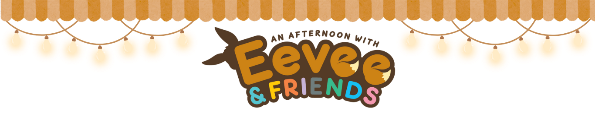

Eevee is one of Pokémon’s most beloved creatures, not because of raw power, but because of possibility. From a single starting point, Eevee can evolve into multiple forms, each with a distinct type, role, and personality. While all Eeveelutions share the same total base stats, their differences emerge through how those stats are distributed. This project explores how Pokémon uses numerical balance and specialization to create meaningful player choice.

So Many Evolutions, One Little Eevee
Although Eevee can evolve into many different forms, every Eeveelution shares the same total
base stat value. This chart shows that Pokémon design does not rely on raw numerical advantage.
Instead, it uses stat distribution to create distinct roles and playstyles.
What kind of Eeveelution are you?
Eevee’s evolutions aren’t just visual changes - they represent different ways of approaching a battle, a team, or even a personality. By comparing Eeveelution types and playstyle roles side by side, we can see how Pokémon design encourages players to choose an evolution that feels right, rather than one that is objectively stronger.
Think of Eeveelutions like different personality types. Some rush in headfirst, dealing damage as fast as possible, while others play the long game, focusing on survival and support. Whether you prefer bold offense or gentle defense, there’s an Eeveelution designed to match your style.
Everyone Has Their Strengths!
Each evolution concentrates heavily on a single attribute—such as speed,
attack, or HP—resulting in bold, immediately recognizable playstyles. These pronounced stat
“spikes” show how Pokémon design can create distinct strategic roles through specialization
while keeping overall power balanced.
Rather than extreme specialization, these evolutions distribute their stats to
support durability, sustained performance, or team support. This demonstrates how Pokémon
design encourages different strategies through subtle shifts in emphasis, without changing
total strength.
The Many Ways to Be Strong
When we look across the entire Eevee family, a pattern emerges. Most evolutions peak in special-oriented stats, particularly Special Defense and Special Attack. This suggests that Pokémon design favors adaptability, resilience, and long-term strategy over raw physical power. Even Eevee herself reflects this trend, reinforcing the idea that strength can take many forms.
At the Heart of It All
Looking across the entire Eevee family, a clear design pattern emerges. Instead of relying on raw physical power, most evolutions emphasize special-oriented strengths such as Special Attack and Special Defense. This approach encourages adaptability, resilience, and long-term strategy, allowing each Eeveelution to excel in a distinct role without overpowering the others. At its core, Eevee represents the idea that strength is not singular — it can take many forms, all equally valid.